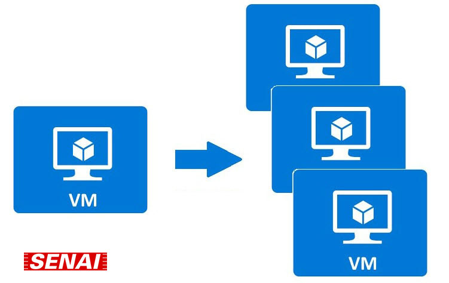
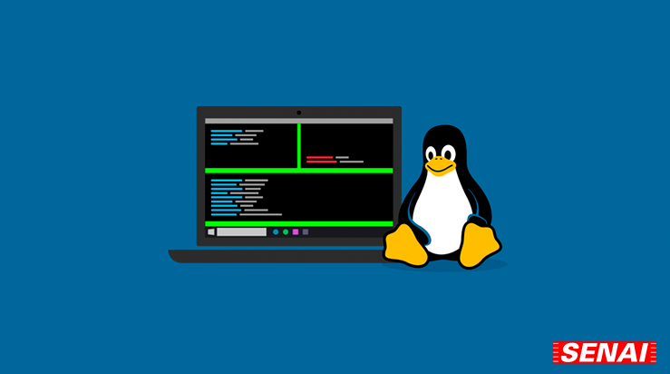
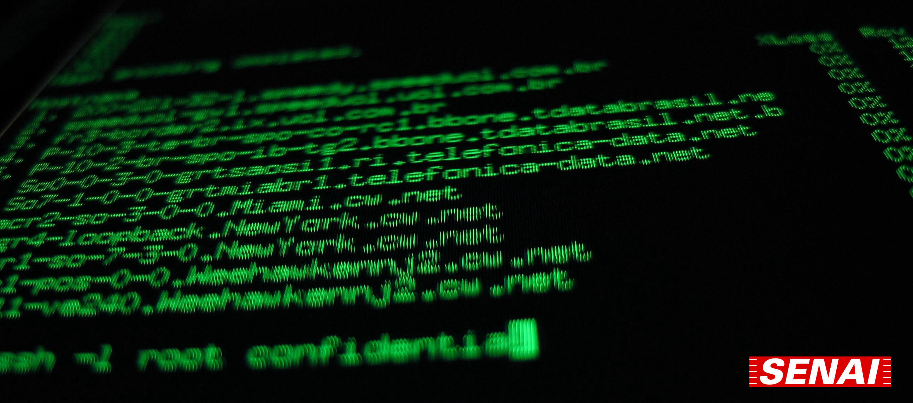
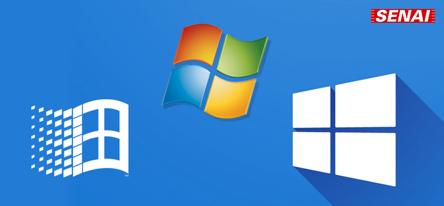

SOP - Sistema Operacionais
A matéria de Sistemas Operacionais é dada pelo professor Herbert Guimarães Borges Ribeiro, focada na parte lógica do computador, voltado para os sistemas operacionais da máquina, como Windows e Linux, onde é ensinado sobre como os sistemas funcionam e operam; comandos de atalho pela prompt de comando e instalação deles em máquinas reais ou virtuais.
Máquina Virtual
O primeiro passo para o curso de sistemas operacionais é aprender sobre máquinas virtuais e o que elas são. Depois de explicado e preparado o computador para virtualizar uma máquina é escolhido a iso de alguma distribuição do Linux para ser trabalhada em aula.
Sistema Operacional
Após a instalação e configuração da máquina virtual, é feito o download de alguma distribuição do Linux, como ubuntu, mint ou lubuntu e é feito passo-a-passo a instalação do sistema, configuração do usuário e suas atualizações.
Linux
Com sua máquina virtual com alguma distribuição do Linux, instalada e atualizada, é iniciado então a aprendizagem do sistema, como ele se comporta, trabalha e seus comandos do seu terminal.
Windows
É ensinado também como é feito a instalação do sistema operacional Windows, como formatar e particionar seus HDs, configuração de usuários e atualizações, caso a iso baixada esteja desatualizada.